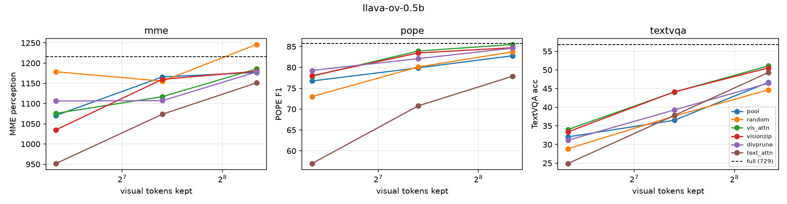
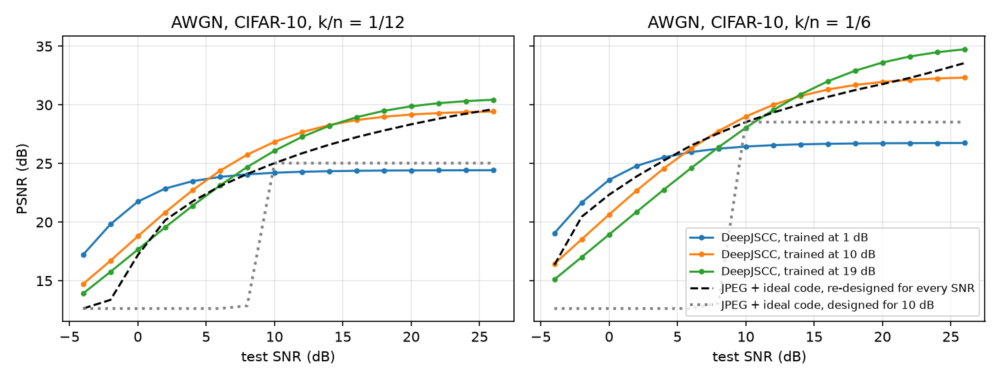
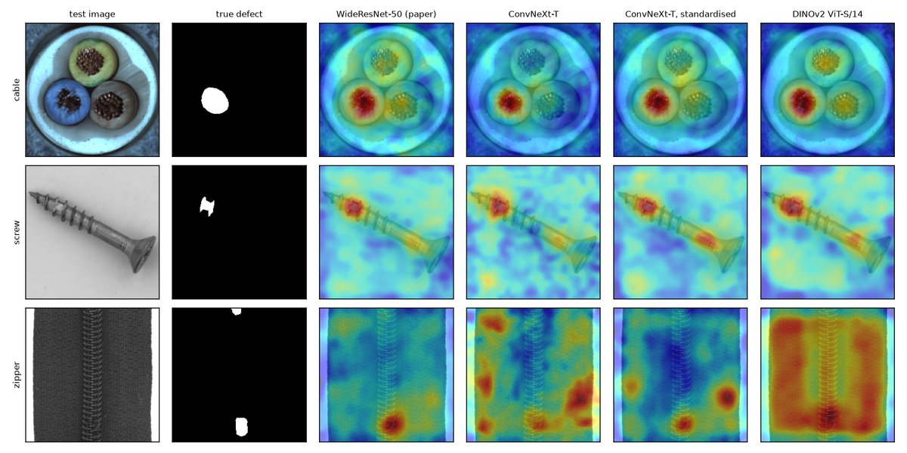
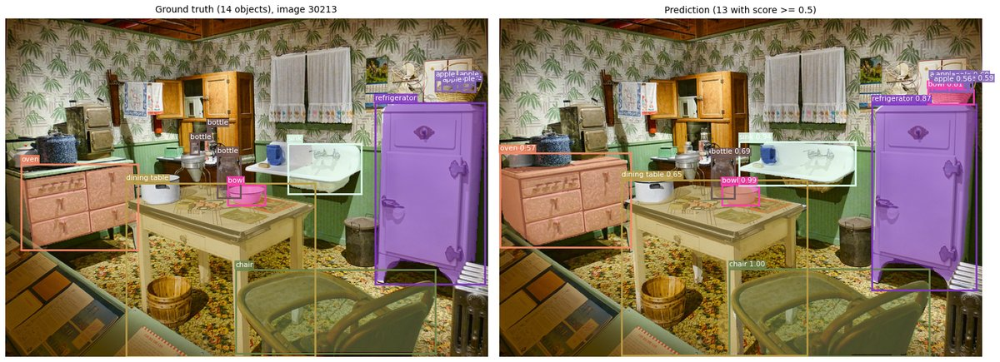

Final-year undergraduate, Electronic & Telecommunication Engineering University of Moratuwa, Sri Lanka
I work on computer vision and deep learning, with a background in signal processing.
Recently I've measured how many visual tokens a small vision-language model really needs, rebuilt deep
joint source-channel coding for wireless image transmission from scratch, and tested which pretrained
features find industrial defects best. My final-year project sends the meaning of a video call
instead of its pixels.
Before that I spent 24 weeks as an engineering intern at IncBotic, building vision systems for PCB
inspection and construction-site safety. I hold a CGPA of 3.80/4.00 and graduate in May 2027.
I'm applying for PhD positions starting in 2027.
News
Nov 2026Finished three projects, with code and results: visual-token reduction in a small vision-language model, DeepJSCC from scratch, and PatchCore anomaly detection with a backbone study (see below).
Oct 2026Started a study of visual-token reduction in small vision-language models.
Oct 2026Launched Sathkaara, a free app with new Physics and Chemistry questions every day for Sri Lankan A/L students (code).
Jun 2026Began my final-year project on semantic communication for multilingual video conferencing, supervised by Prof. Tharaka Samarasinghe and Dr. Kasun Hemachandra.
May 2026Completed a 24-week engineering internship at IncBotic (Pvt) Ltd.
Nov 2025Started as an engineering intern at IncBotic, working on computer vision and signal processing.
Projects
How many visual tokens does a small vision-language model need?
A controlled, training-free comparison of seven visual-token reduction methods at matched budgets in
LLaVA-OneVision-0.5B on POPE, TextVQA and MME, with paired-bootstrap significance tests and timing on a
laptop GPU. Selecting tokens by the vision encoder's attention beats plain pooling only at moderate budgets
(+7.6 TextVQA points at 169 of 729 tokens). Reading text breaks first: 60% of TextVQA accuracy is kept at
81 tokens, against 92% of POPE F1. An 87% cut in LLM prefill FLOPs gives only a 1.6× faster first token,
because the vision encoder costs as much as the whole LLM prefill.

Accuracy vs. visual tokens kept (dashed: all 729 tokens).
PyTorch · Hugging Face Transformers · LLaVA-OneVision · code
Deep joint source-channel coding from scratch
A from-scratch reimplementation of DeepJSCC (Bourtsoulatze, Kurka & Gündüz, 2019): an autoencoder
whose bottleneck is a noisy wireless channel. 11 models on CIFAR-10 over AWGN and Rayleigh fading. With very
little bandwidth it beats JPEG plus an ideal capacity-achieving code at every SNR (+4.6 dB at 0 dB), and it
degrades gracefully where a fixed-rate scheme falls off a cliff. I also diagnosed why models trained on
32×32 images fail on large Kodak photos: the receptive field is larger than the training images.

PSNR vs. channel SNR. Dotted grey: a JPEG scheme designed for 10 dB loses the image below it.
Industrial anomaly detection: PatchCore and why ConvNeXt needs standardised features
A from-scratch PatchCore (CVPR 2022) that finds and localises defects while training only on good parts,
reproduced on all 15 MVTec AD categories (98.8% image / 97.9% pixel AUROC; the paper reports 99.0 / 98.1).
Comparing backbones, ConvNeXt-T, the better ImageNet classifier, was clearly worse (95.3%). I traced this
to a single "massive activation" channel holding 91% of its feature variance, which makes nearest-neighbour
distance almost one-dimensional. Standardising the channels raised it to 98.2%, and 1-shot detection from
68.7% to 85.5%. Self-supervised DINOv2 features were the best with only one good image.

Anomaly maps. Zipper row: raw ConvNeXt features give false hotspots; standardised features find the defect.
Reproducing ConvNeXt: ImageNet classification and COCO detection course project
A reproduction of A ConvNet for the 2020s (CVPR 2022) in a team of two. With Meta's official
checkpoints, ConvNeXt-T matches the paper within 0.05 points on every reported metric: 82.05% ImageNet-1K
top-1 (paper 82.1%), and 50.41 box AP and 43.65 mask AP on COCO val2017 with Cascade Mask R-CNN (paper
50.4 / 43.7). The paper's detection library, mmdetection 2.11, no longer installs, so we re-implemented the
whole Cascade Mask R-CNN inference path in plain PyTorch (feature pyramid, region proposals, RoIAlign, the
three-stage cascade and mask heads), running in half precision on two GPUs. We also ported Meta's training
code from PyTorch 1.8 to PyTorch 2.x.

COCO val2017: ground truth (left) and our re-implemented Cascade Mask R-CNN with ConvNeXt-T (right).
PyTorch · timm · pycocotools · Deep Learning for Vision (EN4554) · code
Semantic communication for low-bandwidth multilingual video calls final-year project
Sends the meaning of a video call instead of its pixels, so the receiver can rebuild the speaker's video and
a translated voice. I work on the visual side: extracting facial keypoints from each frame and sending them
instead of the frames, regenerating the speaker's video at the receiver with lips synchronised to the
translated voice, and keeping audio and video in sync. Details will follow once the design is final.
PyTorch · computer vision · in progress
Automated optical inspection of PCBs
YOLOv8 defect detection (missing holes, mouse bites, open circuits, shorts) reaching validation precision
above 0.97, first as an open-source prototype and then extended during my internship.